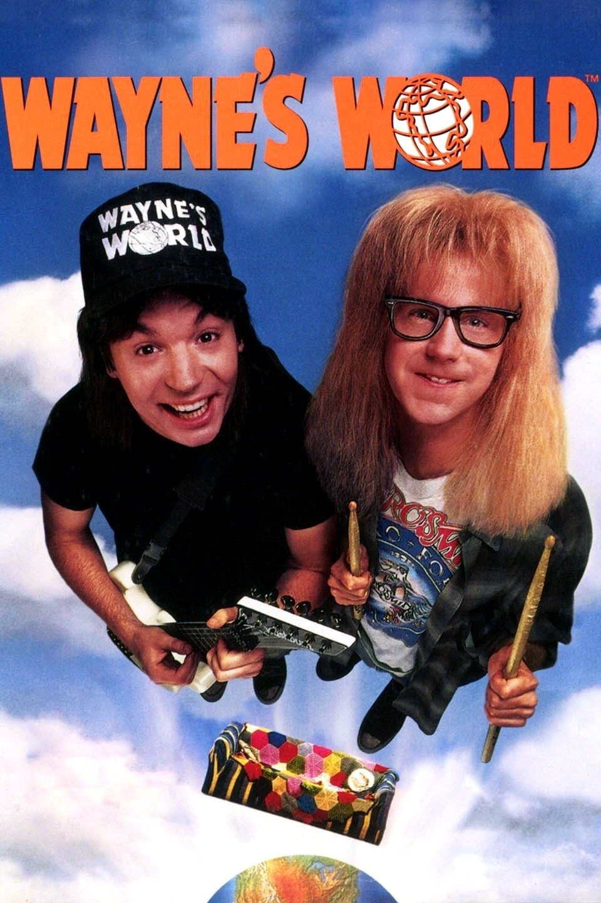
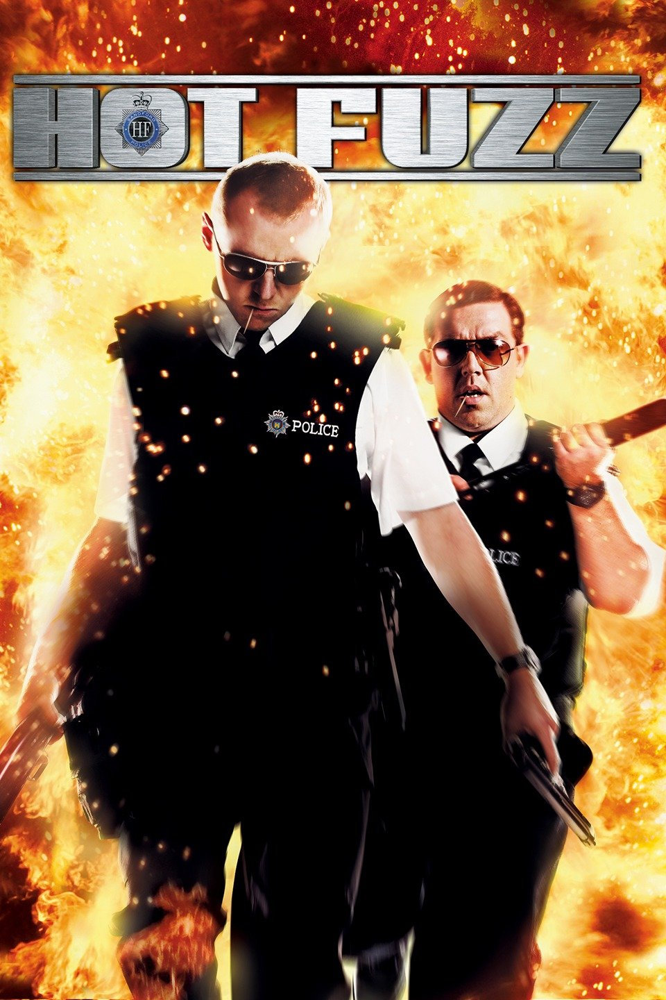
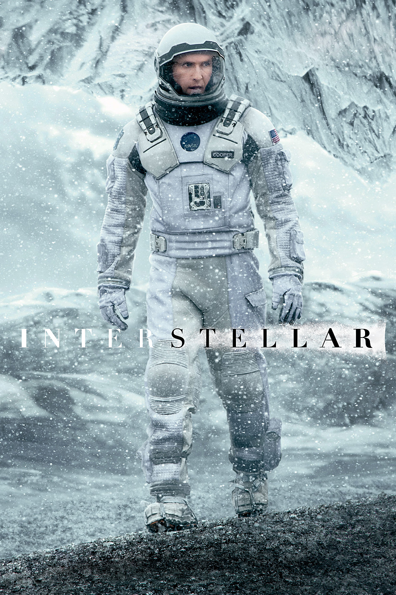

Graduated from a master's degree from the University of Pierre and Marie Curie (Paris 6). I am now exploring the world behind the web with Le Wagon's 9 weeks bootcamp .
Interested in oceanography ?
Check this out|  |
Wayne's World (1992)Wayne et Garth ont transformé une cave en studio de télévision et y animent chaque nuit une émission musicale diffusée sur un réseau câblé local. Un ambitieux producteur de télévision, séduit par leur style débridé, décide de leur donner leur première grande chance. |
|  |
Hot Fuzz (2007)A Londres, le policier Nicholas Angel est le meilleur de son équipe. Tellement bon qu'il fait passer ses collègues pour de simples gardiens de la paix. Le chef de la brigade décide donc de le "promouvoir" dans le petit village de Sandford, où il ne se passe rien. Aux côtés du policier local Danny Butterman qui rêve de devenir Mel Gibson, Nicholas règle quelques contraventions sans grand intérêt. Une série de crimes étranges va le remettre dans l'action.. |
|  |
Interstellar (2014)Le film raconte les aventures d’un groupe d’explorateurs qui utilisent une faille récemment découverte dans l’espace-temps afin de repousser les limites humaines et partir à la conquête des distances astronomiques dans un voyage interstellaire. |
First practice of HTML